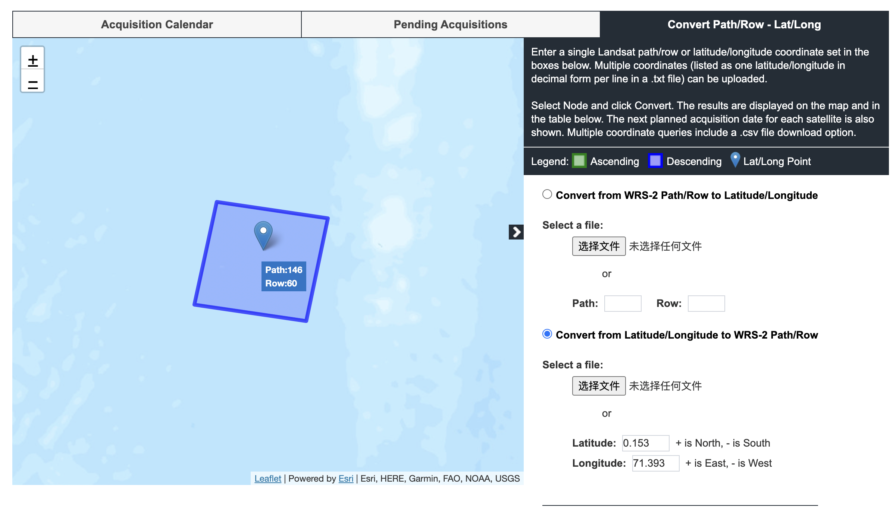
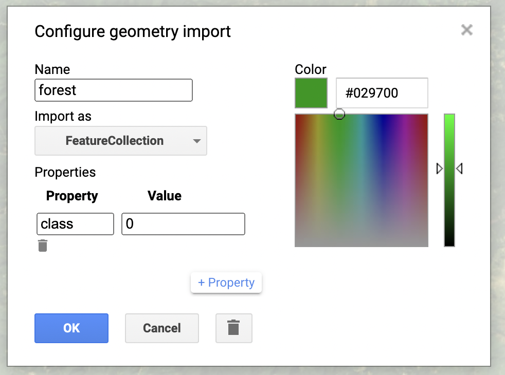
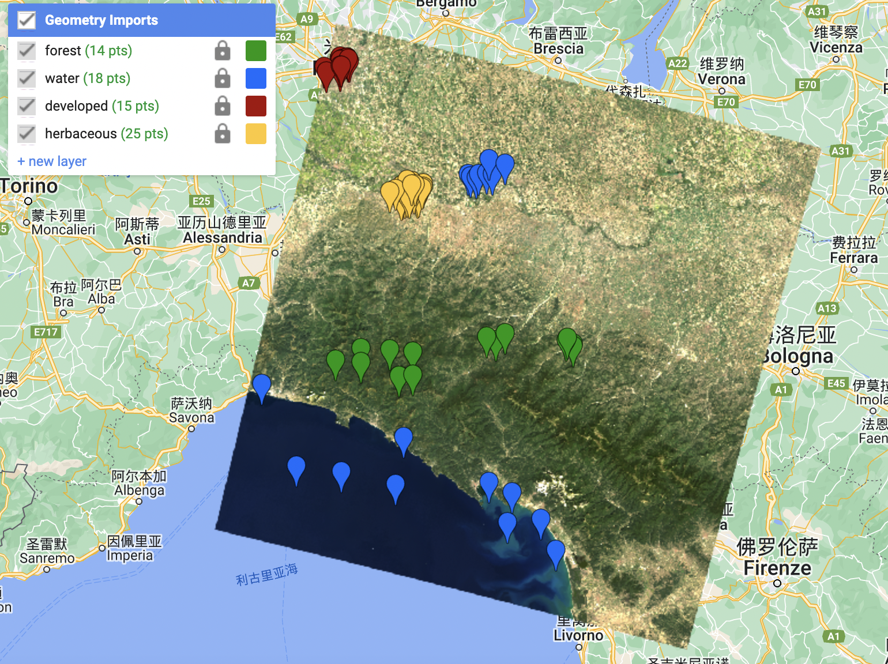

5 WEEK5
5.1 What is GEE?
Google Earth Engine GEE is a cloud platform provided by Google for online visual computing and analysis processing of a large number of global-scale earth science data (especially satellite data). The platform has access to satellite imagery and other Earth observation data databases and sufficient computing power to process these data.
In layman’s terms, Google earth engine can process and analyze remote sensing data (or other earth data) online without downloading the data to your computer for processing. We just need to download the final result to our computer.
The image below shows the Google Earth Engine workspace

5.2 How to use it?
Here is the tutorial book
First of all, the two most fundamental geographic data structures in the Earth Engine, Image and Feature, correspond to raster and vector data types respectively. An image consists of a dictionary of bands and attributes. Features consist of a Geometry and an attribute dictionary. A collection of images (e.g. a time series of images) is represented by ImageCollection. A collection of features is represented by FeatureCollection.
And I think the most of time we use GEE is to deal with RS image, so we will focus on the Image here.
- Load data
By cliking the search for data area, and then the browse data catalogue. A page will pop up, including all remote sensing image data that can be called. These Earth Engine’s public data are classified according to Climate and Weather, Imagery, Geophysical and other categories. You can choose different remote sensing image products according to your needs. This page also provides sample code for importing data.
For Landsat data, after selecting the specified Landsat satellites, (here take Landsat 8 Level 2, Collection 2, Tier 2 as an example) the sample code given by Explore in Earth Engine is:
var dataset = ee.ImageCollection('LANDSAT/LC08/C02/T2_L2')
.filterDate('2021-05-01', '2021-06-01');
// Applies scaling factors.
function applyScaleFactors(image) {
var opticalBands = image.select('SR_B.').multiply(0.0000275).add(-0.2);
var thermalBands = image.select('ST_B.*').multiply(0.00341802).add(149.0);
return image.addBands(opticalBands, null, true)
.addBands(thermalBands, null, true);
}
dataset = dataset.map(applyScaleFactors);
var visualization = {
bands: ['SR_B4', 'SR_B3', 'SR_B2'],
min: 0.0,
max: 0.3,
};
Map.setCenter(-83, 24, 8);
Map.addLayer(dataset, visualization, 'True Color (432)');Among them, ImageCollection indicates that a set of image data is imported, and the time series is from 2021-05-01 to 2021-06-01. applyScaleFactors is a function used to choose a reasonable processing scale.
A scale factor must be applied to both Collection 1 and Collection 2 Landsat Level-2 surface reflectance and surface temperature products before using the data. GEE provides Landsat Collection 2，its surface reflectance has a scale factor of 0.0000275 and an additional offset of -0.2 per pixel
And we need to add the data to our map so we can see them, so we call Map.addLayer.
Running the code we get the result shown below.

We can also filter the data more finely, such as selecting a single image. We can use this website to find out the Path and Row of Landsat image for a area.Using path like LANDSAT/LC08/C02/T1_L2/LC08_146040_20211127 to search the single image and load it. Here it means the path 146 and 40th row. And we can find out the specific location of this image in the map.

- Processing the image
We can do a lot of work on GEE, for example the band math. Here is an example for calculating Normalized Difference Vegetation Index (NDVI) value.
// This function gets NDVI from Landsat 5 imagery.
var getNDVI = function(image) {
return image.normalizedDifference(['B4', 'B3']);
};
// Load two Landsat 5 images, 20 years apart.
var image1 = ee.Image('LANDSAT/LT05/C02/T1_TOA/LT05_044034_19900604');
var image2 = ee.Image('LANDSAT/LT05/C02/T1_TOA/LT05_044034_20100611');
// Use false color combination to visualize the map
var vizParams = {bands: ['B4', 'B3', 'B1'], min: 0.02, max: 0.4, gamma: 1.3};
Map.addLayer(image1,vizParams, 'image1 Landsat 5 false color');
Map.addLayer(image2,vizParams, 'image2 Landsat 5 false color');

The NDVI value and the difference between NDVI images 20 years can be computed
// Compute NDVI from the scenes.
var ndvi1 = getNDVI(image1);
var ndvi2 = getNDVI(image2);
// Compute the difference
var ndviDifference = ndvi2.subtract(ndvi1);5.3 Application
- Interpreting the image
Classification can be done through GEE too, here is an example of Supervised Classification based on the tutorial Interpreting an Image Classification
First we load the image of the city Milan to get a scene
// Create an Earth Engine Point object over Milan.
var pt=ee.Geometry.Point([9.453, 45.424]);
// Filter the Landsat 8 collection and select the least cloudy image.
var landsat=ee.ImageCollection('LANDSAT/LC08/C02/T1_L2')
.filterBounds(pt)
.filterDate('2019-01-01', '2020-01-01')
.sort('CLOUD_COVER')
.first();
// Center the map on that image.
Map.centerObject(landsat, 8);
// Add Landsat image to the map.
var visParams={
bands: ['SR_B4', 'SR_B3', 'SR_B2'],
min: 7000,
max: 12000
};
Map.addLayer(landsat, visParams, 'Landsat 8 image');And then using the Geometry Import function (point drawing), we click the pixel of image to import named forest, developed, water, and herbaceous type of points as FeatureCollection. Each class of points constitute a layer so we will have 4 different layers: forest, water, developed and herbaceous. These points will be our training data.


Using the code below, we firstly combine all the training feature collections into one. And then,we select the bands whose information will be used in classification.
// Combine training feature collections.
var trainingFeatures=ee.FeatureCollection([
forest, developed, water, herbaceous
]).flatten();
// Define prediction bands.
var predictionBands=[
'SR_B1', 'SR_B2', 'SR_B3', 'SR_B4', 'SR_B5', 'SR_B6', 'SR_B7',
'ST_B10'
];
// Sample training points.
var classifierTraining=landsat.select(predictionBands)
.sampleRegions({
collection: trainingFeatures,
properties: ['class'],
scale: 30
});Now the training data is ready, we need to choose a classifier. Here we use the CART classifier. The principle of this classifier will be talked in my later diary. The code in GEE is quite simply. We call the ee.Classifier.smileCart() function, and state the aim of classification is related to the class of each pixel.
// Train a CART Classifier.
var classifier=ee.Classifier.smileCart().train({
features: classifierTraining,
classProperty: 'class',
inputProperties: predictionBands
});
After building the classifier, we can classify our image and visualize the results in a new map.
// Classify the Landsat image.
var classified=landsat.select(predictionBands).classify(classifier);
// Define classification image visualization parameters.
var classificationVis={
min: 0,
max: 3,
palette: ['589400', 'ff0000', '1a11ff', 'd0741e']
};
// Add the classified image to the map.
Map.addLayer(classified, classificationVis, 'CART classified');The figure below shows the classification results. However, the classification results are not ideal. Compared to the original image, we can see that the a lot of pixel around the forest are misclassified to water. and the class of developed which stands for the built area in cities are not well identified. In the contract, the classified herbaceous area is much lager than it actually is.

I am not sure about the reason… but if my code is correct, then maybe due to the sample points I collected is not enough, or the results of my visual interpretation are not very accurate…
5.4 Reflections
This week we learned how to process remote sensing images in Google Earth Engine. This is a very advanced technology that can save us a lot of time for downloading data. But since this week’s class was affected by the strike, I didn’t have a good grasp of the use of GEE. But I still made some attempts.
First of all, I think GEE can help us clearly list remote sensing products, which is very helpful. For me, I often struggle with which remote sensing product to use. The data catalog of GEE classifies the main application of the product, which is very helpful. In addition, I also think that the working area of GEE can automatically display web maps, which greatly facilitates our understanding of remote sensing images.
Secondly, about the code of GEE. Generally speaking, I think the codes of many functions are well packed and very convenient to use. But we still need to have a good understanding of the fundamental geographic data structures of GEE. And GEE’s workspace also allows us to process data interactively, such as drawing elements with the mouse and storing them in layers. This is used in our image classification operation. At present, I can only implement this part by referring to the tutorial document.
Finally, in this week’s practice, the supervised classification I tried showed a very bad results. I preliminary analyzed that it has something to do with my sample point selection. Besides, due to the limited understanding of classifiers at present, I hope that I will be more clear about it after week 6 and week 7’s study.